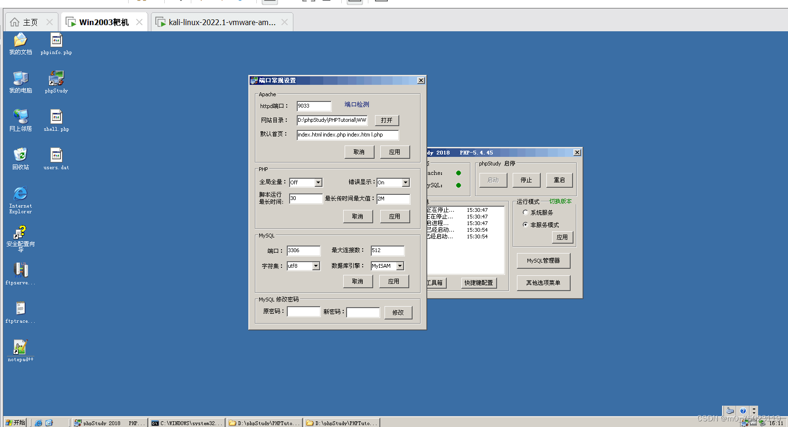
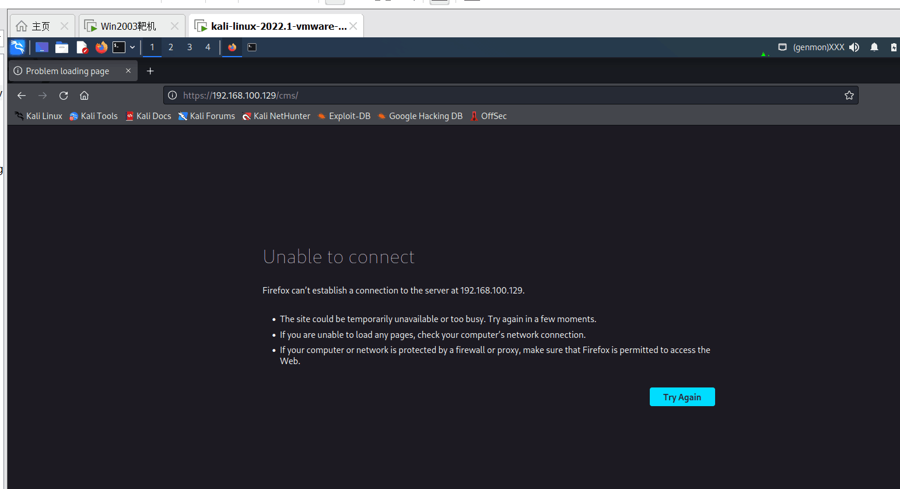
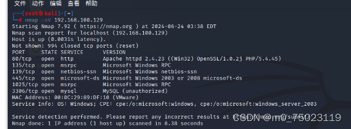
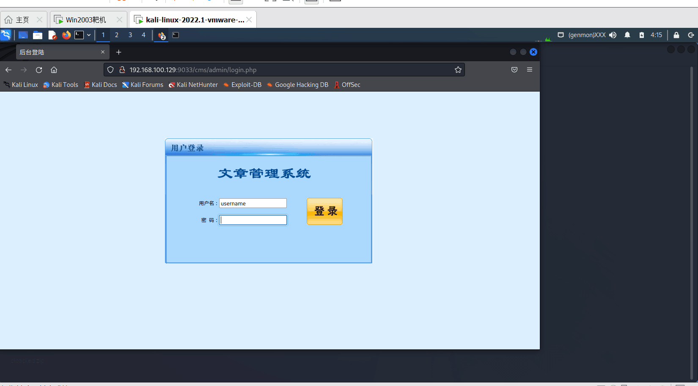

本文主要记录了在Windows Server 2003靶机上修改 CMS 管理系统端口，并在Kali Linux攻击机上完成端口扫描、定位服务并成功访问的完整实验过程。
修改 CMS 端口，在靶机中通过phpStudy 2018控制面板，将 Apache 的 httpd 端口修改为9033，配置完成后应用并保存端口设置。

使用常规端口扫描进行检测，在 Kali 中使用对应扫描命令进行探测，仅识别出常见开放端口，无法扫描到自定义9033端口，直接访问对应路径失败。

更换全端口精准扫描方式后，成功探测到9033端口开放且运行 HTTP 服务。通过对应IP加端口的访问形式，顺利进入CMS后台登录页面，完成本次实验全部目标。

实验结论：修改网站为非默认高位端口后，普通常规扫描只能识别常用端口，无法发现自定义端口服务，必须使用全端口扫描，才能精准探测所有开放端口与运行服务。
